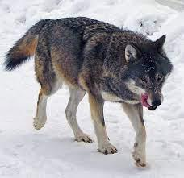

Tested object:
Wolfram identification:Labrador Retriever (dog breed) female height: 21 to 24 inches female weight: 55 to 70 lb size: large life span: 10 to 12 years litter size: 7 to 12 origin: Canada
MobileNet identification:screen,CRT screen,monitor
More Accurate:Wolfram
Tested object:
Wolfram identification:domestic cat (animal) scientific name: Felis catus alt. common name: house cat max. recorded lifespan: 38.01 years length: 30 inches weight: 9 to 12 pounds head and body length: 25 inches
MobileNet identification:Tiger cat
More Accurate:Tie!
Tested object:
Wolfram identification:gray wolf (animal) scientific name: Canis lupus alt. scientific name: Canis dingo max. recorded lifespan: 14 years length: 34 to 51 inches max. recorded length: 59 inches weight: 51 to 180 pounds
MobileNet identification:Armadilo,Monitor,desktop,computer
More Accurate:Wolfram by far
Tested object:
Wolfram identification:pug (dog breed) female height: 10 to 14 inches female weight: 14 to 18 lb size: toy, small life span: 12 to 15 years litter size: 4 to 8 origin: China
MobileNet identification:Ski mask,monitor
More Accurate:Wolfram
Wolfram-3/4
MobileNet-0/4
Overall better-WOLFRAM!
DISCLAMER:this may not be 100% accurate